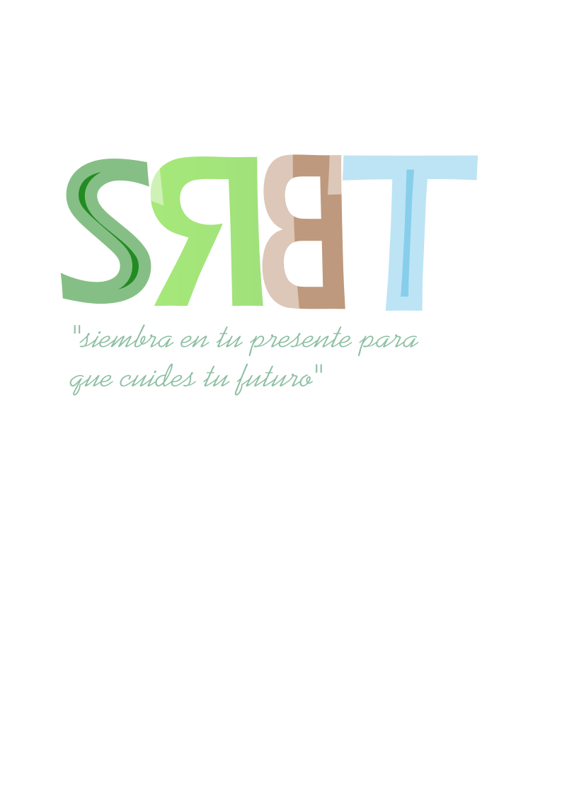
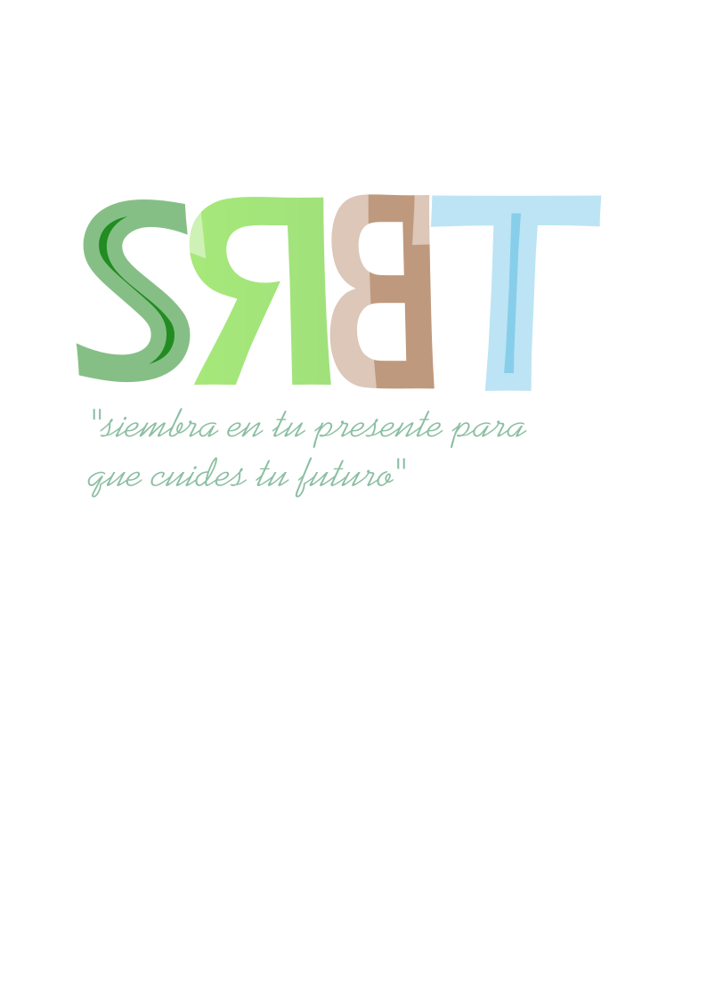
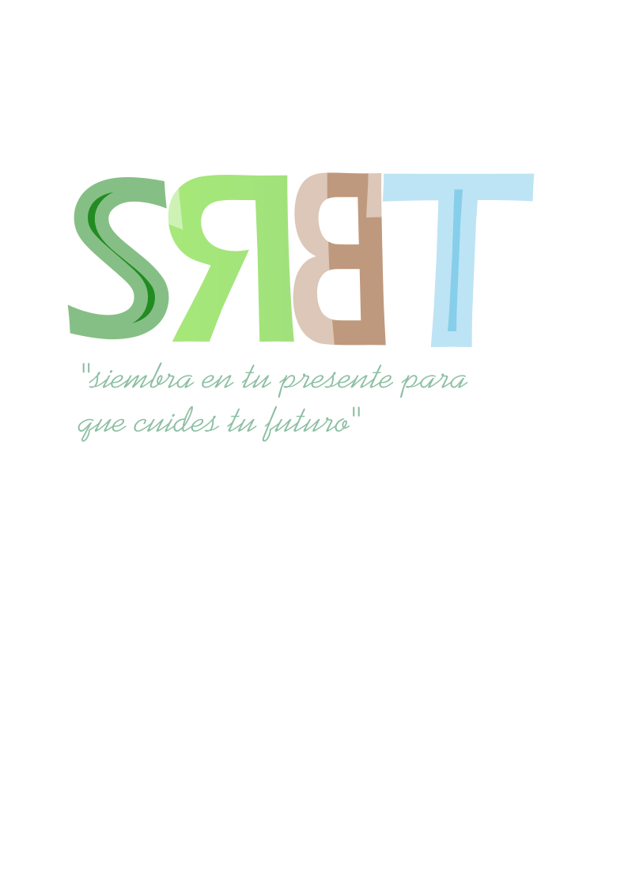
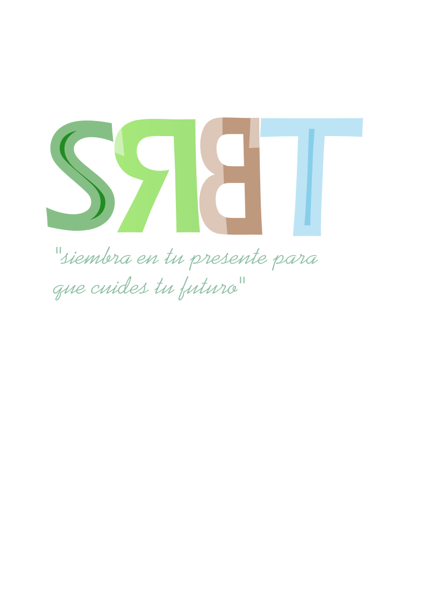
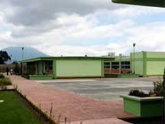
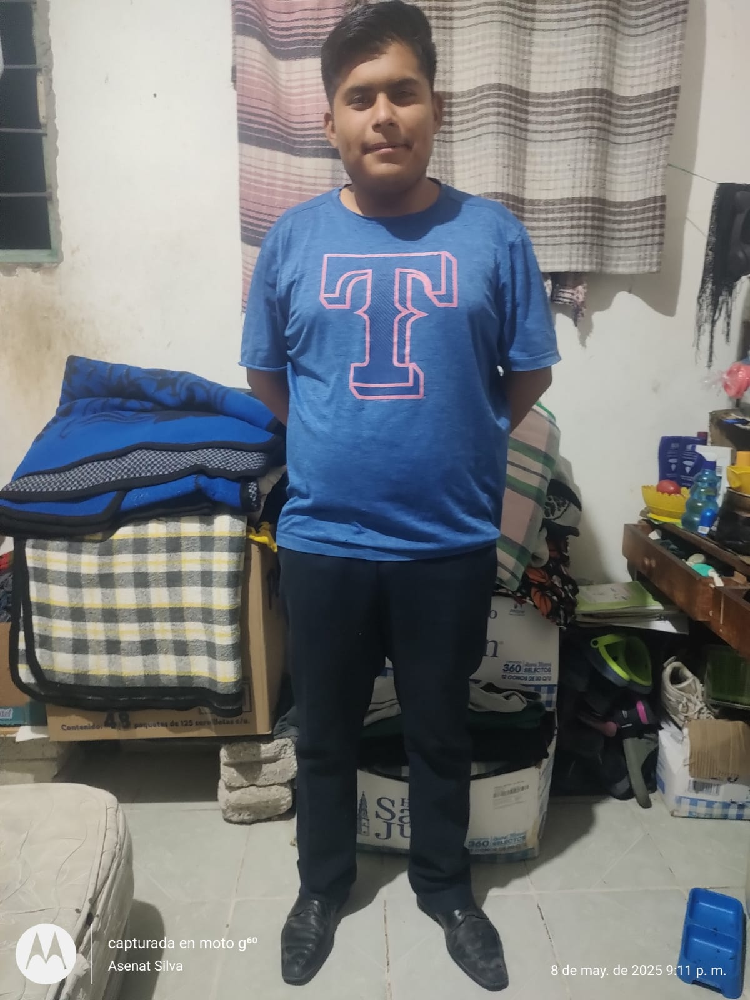

pagina de reforestacion

pagina de reforestacion

 
pagina de reforestacion

pagina de reforestacion
Dirección: Carretera libre s/n. Atlacomulco, localidad San Cristóbal de los Baños, Ixtlahuaca, Méx. C.P. 50754
Teléfonos: Sin teléfono fijo
Especialidades Formación para el trabajo:
■ Tecnologías de la Información y la comunicación
Josue Ramirez Sierra
Ana Idem Rodriguez Gonzalez
Cintia Karina Gomez Chavarria
Blanca Ortiz Maartinez
Motivar los jovenes a que cuiden al medio ambiente
Que los jovenes logren comprender que importante es el medio ambiente para el cuidado y vida humana
La reforestación es la práctica de volver a plantar árboles en áreas donde han sido talados o donde se ha perdido la vegetación forestal. Es un proceso crucial para restaurar ecosistemas, combatir la desertificación, mejorar la calidad del aire y el agua, y mitigar el cambio climático. Además, la reforestación puede contribuir a la conservación de la biodiversidad y proporcionar beneficios económicos y sociales para las comunidades locales.
En su materia nos dejp traer un arbol por equipos de 10 integrantes para poderlo p´lantar dentro del plantel.
De igula manera nos dejo llevar un arbol pero de tamaño pequeño para poder hacer la campaña de reforestacion dentro o fuera de la institucion.